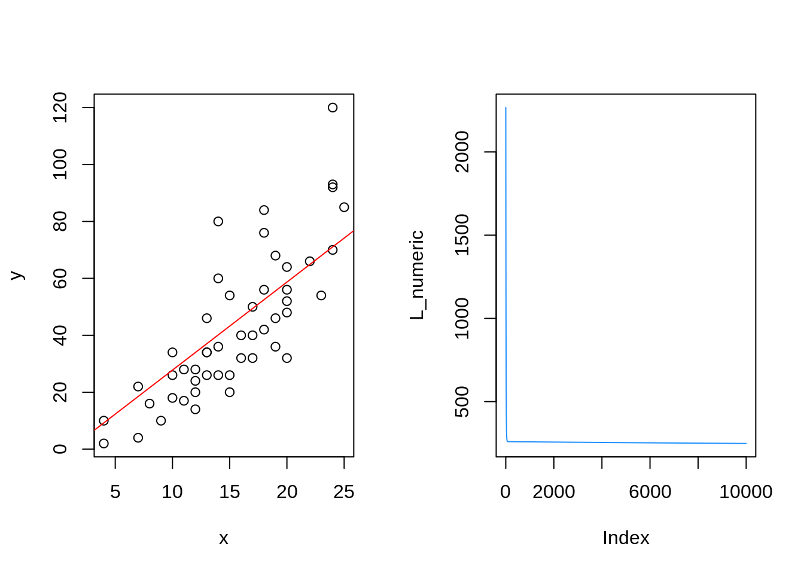
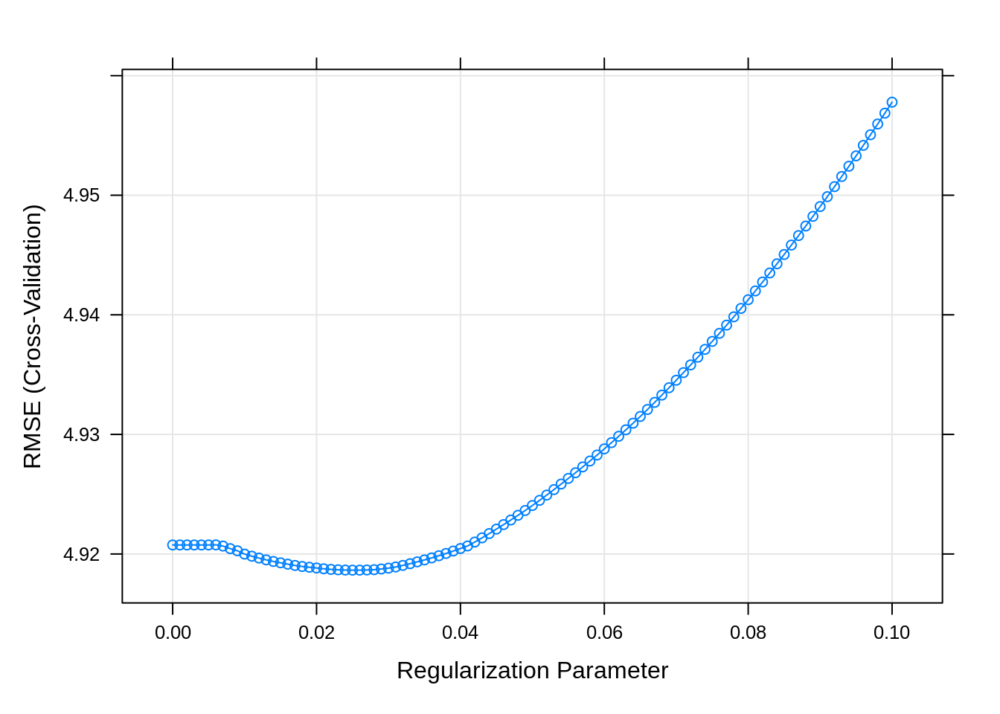

Agenda:
-
<<<<<<< HEAD
- Multicollinearity
- Variable selection
- Shrinkage Estimators
Packages we will require this week
Packages we will require this week
packages <- c(
# Old packages
"ISLR2",
"dplyr",
"tidyr",
"readr",
"purrr",
<<<<<<< HEAD
# New packages
"glmnet",
"caret",
"car",
"corrplot",
"repr"
=======
"glmnet",
"caret",
"repr",
# NEW
"torch",
"mlbench"
>>>>>>> 5aee636 (fasttrack)
)
# renv::install(packages)
sapply(packages, require, character.only=TRUE)Loading required package: reprWarning in library(package, lib.loc = lib.loc, character.only = TRUE,
logical.return = TRUE, : there is no package called 'repr' ISLR2 dplyr tidyr readr purrr glmnet caret car
TRUE TRUE TRUE TRUE TRUE TRUE TRUE TRUE
corrplot repr
TRUE FALSE Tue, Feb 14
In this class, we are going to look at variable selection. Consider the Boston housing dataset which is described here:
library(ISLR2)
attach(Boston)
head(Boston) crim zn indus chas nox rm age dis rad tax ptratio lstat medv
1 0.00632 18 2.31 0 0.538 6.575 65.2 4.0900 1 296 15.3 4.98 24.0
2 0.02731 0 7.07 0 0.469 6.421 78.9 4.9671 2 242 17.8 9.14 21.6
3 0.02729 0 7.07 0 0.469 7.185 61.1 4.9671 2 242 17.8 4.03 34.7
4 0.03237 0 2.18 0 0.458 6.998 45.8 6.0622 3 222 18.7 2.94 33.4
5 0.06905 0 2.18 0 0.458 7.147 54.2 6.0622 3 222 18.7 5.33 36.2
6 0.02985 0 2.18 0 0.458 6.430 58.7 6.0622 3 222 18.7 5.21 28.7df <- Boston %>%
mutate(chas = as.factor(chas))
head(df) crim zn indus chas nox rm age dis rad tax ptratio lstat medv
1 0.00632 18 2.31 0 0.538 6.575 65.2 4.0900 1 296 15.3 4.98 24.0
2 0.02731 0 7.07 0 0.469 6.421 78.9 4.9671 2 242 17.8 9.14 21.6
3 0.02729 0 7.07 0 0.469 7.185 61.1 4.9671 2 242 17.8 4.03 34.7
4 0.03237 0 2.18 0 0.458 6.998 45.8 6.0622 3 222 18.7 2.94 33.4
5 0.06905 0 2.18 0 0.458 7.147 54.2 6.0622 3 222 18.7 5.33 36.2
6 0.02985 0 2.18 0 0.458 6.430 58.7 6.0622 3 222 18.7 5.21 28.7Explanation of the variables
The original data are 506 observations on 14 variables, medv being the target variable:
crimper capita crime rate by townznproportion of residential land zoned for lots over 25,000 sq.ftindusproportion of non-retail business acres per townchasCharles River dummy variable (= 1 if tract bounds river; 0 otherwise)noxnitric oxides concentration (parts per 10 million)rmaverage number of rooms per dwellingageproportion of owner-occupied units built prior to 1940disweighted distances to five Boston employment centresradindex of accessibility to radial highwaystaxfull-value property-tax rate per USD 10,000ptratiopupil-teacher ratio by town- ~
b1000(B - 0.63)^2 where B is the proportion of black residents by town~ lstatpercentage of lower status of the populationmedvmedian value of owner-occupied homes in USD 1000’s
EDA:
Histograms
df %>%
keep(is.numeric) %>%
gather() %>%
ggplot(aes(value)) +
geom_histogram(bins=30) +
facet_wrap(~ key, scales = "free")
Boxplot of the variables
df %>%
keep(is.numeric) %>%
gather() %>%
ggplot(aes(y=value)) +
geom_boxplot() +
facet_wrap(~ key,scales="free")
Scatterplot of the variables
df %>%
select(-chas) %>%
gather(key, val, -medv) %>%
ggplot(aes(x = val, y = medv)) +
geom_point(alpha=0.1) +
stat_smooth(formula = y ~ x, method="lm") +
facet_wrap(~key, scales = "free")
Regression model
We begin by creating a regression model to predict medv using all the predictors:
full_model <- lm(medv ~ ., df)
# summary(full_model)
broom::tidy(full_model)# A tibble: 13 × 5
term estimate std.error statistic p.value
<chr> <dbl> <dbl> <dbl> <dbl>
1 (Intercept) 41.6 4.94 8.43 3.79e-16
2 crim -0.121 0.0330 -3.68 2.61e- 4
3 zn 0.0470 0.0139 3.38 7.72e- 4
4 indus 0.0135 0.0621 0.217 8.29e- 1
5 chas1 2.84 0.870 3.26 1.17e- 3
6 nox -18.8 3.85 -4.87 1.50e- 6
7 rm 3.66 0.420 8.70 4.81e-17
8 age 0.00361 0.0133 0.271 7.87e- 1
9 dis -1.49 0.202 -7.39 6.17e-13
10 rad 0.289 0.0669 4.33 1.84e- 5
11 tax -0.0127 0.00380 -3.34 9.12e- 4
12 ptratio -0.938 0.132 -7.09 4.63e-12
13 lstat -0.552 0.0507 -10.9 6.39e-25
We can see that most of the variables are significant. However, notably
ageandindusare not significant predictors ofmedv
Is this true?
# plot(medv ~ age, df)
# abline(lm(medv ~ age), col="red")
model_age <- lm(medv ~ age, df)
# summary(model_age)
broom::tidy(model_age)# A tibble: 2 × 5
term estimate std.error statistic p.value
<chr> <dbl> <dbl> <dbl> <dbl>
1 (Intercept) 31.0 0.999 31.0 6.81e-119
2 age -0.123 0.0135 -9.14 1.57e- 18# plot(medv ~ indus, df)
# abline(lm(medv ~ indus), col="red")
model_indus <- lm(medv ~ indus, df)
broom::tidy(model_indus)# A tibble: 2 × 5
term estimate std.error statistic p.value
<chr> <dbl> <dbl> <dbl> <dbl>
1 (Intercept) 29.8 0.683 43.5 6.70e-173
2 indus -0.648 0.0523 -12.4 4.90e- 31R <- df %>%
keep(is.numeric) %>%
cor()
R crim zn indus nox rm age
crim 1.0000000 -0.2004692 0.4065834 0.4209717 -0.2192467 0.3527343
zn -0.2004692 1.0000000 -0.5338282 -0.5166037 0.3119906 -0.5695373
indus 0.4065834 -0.5338282 1.0000000 0.7636514 -0.3916759 0.6447785
nox 0.4209717 -0.5166037 0.7636514 1.0000000 -0.3021882 0.7314701
rm -0.2192467 0.3119906 -0.3916759 -0.3021882 1.0000000 -0.2402649
age 0.3527343 -0.5695373 0.6447785 0.7314701 -0.2402649 1.0000000
dis -0.3796701 0.6644082 -0.7080270 -0.7692301 0.2052462 -0.7478805
rad 0.6255051 -0.3119478 0.5951293 0.6114406 -0.2098467 0.4560225
tax 0.5827643 -0.3145633 0.7207602 0.6680232 -0.2920478 0.5064556
ptratio 0.2899456 -0.3916785 0.3832476 0.1889327 -0.3555015 0.2615150
lstat 0.4556215 -0.4129946 0.6037997 0.5908789 -0.6138083 0.6023385
medv -0.3883046 0.3604453 -0.4837252 -0.4273208 0.6953599 -0.3769546
dis rad tax ptratio lstat medv
crim -0.3796701 0.6255051 0.5827643 0.2899456 0.4556215 -0.3883046
zn 0.6644082 -0.3119478 -0.3145633 -0.3916785 -0.4129946 0.3604453
indus -0.7080270 0.5951293 0.7207602 0.3832476 0.6037997 -0.4837252
nox -0.7692301 0.6114406 0.6680232 0.1889327 0.5908789 -0.4273208
rm 0.2052462 -0.2098467 -0.2920478 -0.3555015 -0.6138083 0.6953599
age -0.7478805 0.4560225 0.5064556 0.2615150 0.6023385 -0.3769546
dis 1.0000000 -0.4945879 -0.5344316 -0.2324705 -0.4969958 0.2499287
rad -0.4945879 1.0000000 0.9102282 0.4647412 0.4886763 -0.3816262
tax -0.5344316 0.9102282 1.0000000 0.4608530 0.5439934 -0.4685359
ptratio -0.2324705 0.4647412 0.4608530 1.0000000 0.3740443 -0.5077867
lstat -0.4969958 0.4886763 0.5439934 0.3740443 1.0000000 -0.7376627
medv 0.2499287 -0.3816262 -0.4685359 -0.5077867 -0.7376627 1.0000000library(corrplot)
corrplot(R, type="upper", order="hclust")
new_cols <- colnames(df)[-c(5, 13)]
model <- lm(medv ~ ., df %>% select(-c(indus, nox, dis)))
broom::tidy(model)# A tibble: 10 × 5
term estimate std.error statistic p.value
<chr> <dbl> <dbl> <dbl> <dbl>
1 (Intercept) 21.7 4.22 5.14 4.01e- 7
2 crim -0.0919 0.0347 -2.65 8.38e- 3
3 zn 0.00879 0.0127 0.694 4.88e- 1
4 chas1 2.95 0.914 3.23 1.31e- 3
5 rm 4.10 0.439 9.34 3.33e-19
6 age 0.0209 0.0122 1.71 8.73e- 2
7 rad 0.252 0.0679 3.71 2.31e- 4
8 tax -0.0124 0.00347 -3.58 3.71e- 4
9 ptratio -0.887 0.129 -6.86 2.03e-11
10 lstat -0.574 0.0532 -10.8 1.55e-24Variance Inflation Factors
library(car)
vif_model <- lm(medv ~ ., df)
vif(vif_model) %>% knitr::kable()| x | |
|---|---|
| crim | 1.767486 |
| zn | 2.298459 |
| indus | 3.987181 |
| chas | 1.071168 |
| nox | 4.369093 |
| rm | 1.912532 |
| age | 3.088232 |
| dis | 3.954037 |
| rad | 7.445301 |
| tax | 9.002158 |
| ptratio | 1.797060 |
| lstat | 2.870776 |
Stepwise Regression
If we are given a full model
\[ y = \beta_0 + \beta_1 x_1 + \beta_2 x_2 + \dots + \beta_p x_p + \epsilon \]
Variable selection methods (i.e., forward/backward/forward-backward selection) try to find the best subset of variables by either:
- Adding variables one at a time to include the variable which leads to the best model improvement (forward)
- Removing variables one at a time to exclude the variable which leads to the least model degradation (backward)
- Some combination of 1. and 2. (both)
null_model <- lm(medv ~ 1, df)
full_model <- lm(medv ~ ., df)library(caret)
forward_model <- step(null_model, direction = "forward", scope=formula(full_model))Start: AIC=2246.51
medv ~ 1
Df Sum of Sq RSS AIC
+ lstat 1 23243.9 19472 1851.0
+ rm 1 20654.4 22062 1914.2
+ ptratio 1 11014.3 31702 2097.6
+ indus 1 9995.2 32721 2113.6
+ tax 1 9377.3 33339 2123.1
+ nox 1 7800.1 34916 2146.5
+ crim 1 6440.8 36276 2165.8
+ rad 1 6221.1 36495 2168.9
+ age 1 6069.8 36647 2171.0
+ zn 1 5549.7 37167 2178.1
+ dis 1 2668.2 40048 2215.9
+ chas 1 1312.1 41404 2232.7
<none> 42716 2246.5
Step: AIC=1851.01
medv ~ lstat
Df Sum of Sq RSS AIC
+ rm 1 4033.1 15439 1735.6
+ ptratio 1 2670.1 16802 1778.4
+ chas 1 786.3 18686 1832.2
+ dis 1 772.4 18700 1832.5
+ age 1 304.3 19168 1845.0
+ tax 1 274.4 19198 1845.8
+ zn 1 160.3 19312 1848.8
+ crim 1 146.9 19325 1849.2
+ indus 1 98.7 19374 1850.4
<none> 19472 1851.0
+ rad 1 25.1 19447 1852.4
+ nox 1 4.8 19468 1852.9
Step: AIC=1735.58
medv ~ lstat + rm
Df Sum of Sq RSS AIC
+ ptratio 1 1711.32 13728 1678.1
+ chas 1 548.53 14891 1719.3
+ tax 1 425.16 15014 1723.5
+ dis 1 351.15 15088 1725.9
+ crim 1 311.42 15128 1727.3
+ rad 1 180.45 15259 1731.6
+ indus 1 61.09 15378 1735.6
<none> 15439 1735.6
+ zn 1 56.56 15383 1735.7
+ age 1 20.18 15419 1736.9
+ nox 1 14.90 15424 1737.1
Step: AIC=1678.13
medv ~ lstat + rm + ptratio
Df Sum of Sq RSS AIC
+ dis 1 499.08 13229 1661.4
+ chas 1 377.96 13350 1666.0
+ crim 1 122.52 13606 1675.6
+ age 1 66.24 13662 1677.7
<none> 13728 1678.1
+ tax 1 44.36 13684 1678.5
+ nox 1 24.81 13703 1679.2
+ zn 1 14.96 13713 1679.6
+ rad 1 6.07 13722 1679.9
+ indus 1 0.83 13727 1680.1
Step: AIC=1661.39
medv ~ lstat + rm + ptratio + dis
Df Sum of Sq RSS AIC
+ nox 1 759.56 12469 1633.5
+ chas 1 267.43 12962 1653.1
+ indus 1 242.65 12986 1654.0
+ tax 1 240.34 12989 1654.1
+ crim 1 233.54 12995 1654.4
+ zn 1 144.81 13084 1657.8
+ age 1 61.36 13168 1661.0
<none> 13229 1661.4
+ rad 1 22.40 13206 1662.5
Step: AIC=1633.47
medv ~ lstat + rm + ptratio + dis + nox
Df Sum of Sq RSS AIC
+ chas 1 328.27 12141 1622.0
+ zn 1 151.71 12318 1629.3
+ crim 1 141.43 12328 1629.7
+ rad 1 53.48 12416 1633.3
<none> 12469 1633.5
+ indus 1 17.10 12452 1634.8
+ tax 1 10.50 12459 1635.0
+ age 1 0.25 12469 1635.5
Step: AIC=1621.97
medv ~ lstat + rm + ptratio + dis + nox + chas
Df Sum of Sq RSS AIC
+ zn 1 164.406 11977 1617.1
+ crim 1 116.330 12025 1619.1
+ rad 1 58.556 12082 1621.5
<none> 12141 1622.0
+ indus 1 26.274 12115 1622.9
+ tax 1 4.187 12137 1623.8
+ age 1 2.331 12139 1623.9
Step: AIC=1617.07
medv ~ lstat + rm + ptratio + dis + nox + chas + zn
Df Sum of Sq RSS AIC
+ crim 1 170.902 11806 1611.8
<none> 11977 1617.1
+ tax 1 31.773 11945 1617.7
+ rad 1 28.311 11948 1617.9
+ indus 1 27.377 11949 1617.9
+ age 1 0.071 11977 1619.1
Step: AIC=1611.8
medv ~ lstat + rm + ptratio + dis + nox + chas + zn + crim
Df Sum of Sq RSS AIC
+ rad 1 155.006 11651 1607.1
<none> 11806 1611.8
+ indus 1 24.957 11781 1612.7
+ tax 1 1.418 11804 1613.7
+ age 1 0.178 11806 1613.8
Step: AIC=1607.11
medv ~ lstat + rm + ptratio + dis + nox + chas + zn + crim +
rad
Df Sum of Sq RSS AIC
+ tax 1 298.573 11352 1596.0
<none> 11651 1607.1
+ indus 1 44.346 11606 1607.2
+ age 1 0.581 11650 1609.1
Step: AIC=1595.98
medv ~ lstat + rm + ptratio + dis + nox + chas + zn + crim +
rad + tax
Df Sum of Sq RSS AIC
<none> 11352 1596.0
+ age 1 1.6865 11350 1597.9
+ indus 1 1.0784 11351 1597.9broom::tidy(forward_model)# A tibble: 11 × 5
term estimate std.error statistic p.value
<chr> <dbl> <dbl> <dbl> <dbl>
1 (Intercept) 41.5 4.90 8.45 3.18e-16
2 lstat -0.547 0.0474 -11.5 2.29e-27
3 rm 3.67 0.409 8.98 5.78e-18
4 ptratio -0.931 0.130 -7.14 3.39e-12
5 dis -1.52 0.188 -8.08 5.08e-15
6 nox -18.3 3.57 -5.12 4.33e- 7
7 chas1 2.87 0.863 3.33 9.35e- 4
8 zn 0.0462 0.0137 3.38 7.87e- 4
9 crim -0.122 0.0329 -3.70 2.44e- 4
10 rad 0.284 0.0639 4.44 1.11e- 5
11 tax -0.0123 0.00341 -3.61 3.40e- 4backward_model <- step(full_model, direction = "backward", scope=formula(full_model))Start: AIC=1599.85
medv ~ crim + zn + indus + chas + nox + rm + age + dis + rad +
tax + ptratio + lstat
Df Sum of Sq RSS AIC
- indus 1 1.08 11350 1597.9
- age 1 1.69 11351 1597.9
<none> 11349 1599.8
- chas 1 245.31 11595 1608.7
- tax 1 256.28 11606 1609.2
- zn 1 263.59 11613 1609.5
- crim 1 311.49 11661 1611.6
- rad 1 430.71 11780 1616.7
- nox 1 546.10 11896 1621.6
- ptratio 1 1157.70 12507 1647.0
- dis 1 1258.52 12608 1651.1
- rm 1 1744.36 13094 1670.2
- lstat 1 2733.54 14083 1707.0
Step: AIC=1597.9
medv ~ crim + zn + chas + nox + rm + age + dis + rad + tax +
ptratio + lstat
Df Sum of Sq RSS AIC
- age 1 1.69 11352 1596.0
<none> 11350 1597.9
- chas 1 251.21 11602 1607.0
- zn 1 262.99 11614 1607.5
- tax 1 299.68 11650 1609.1
- crim 1 313.07 11664 1609.7
- rad 1 453.61 11804 1615.7
- nox 1 574.23 11925 1620.9
- ptratio 1 1168.01 12518 1645.5
- dis 1 1333.19 12684 1652.1
- rm 1 1750.50 13101 1668.5
- lstat 1 2743.21 14094 1705.4
Step: AIC=1595.98
medv ~ crim + zn + chas + nox + rm + dis + rad + tax + ptratio +
lstat
Df Sum of Sq RSS AIC
<none> 11352 1596.0
- chas 1 254.21 11606 1605.2
- zn 1 261.75 11614 1605.5
- tax 1 298.57 11651 1607.1
- crim 1 313.27 11666 1607.8
- rad 1 452.16 11804 1613.7
- nox 1 601.74 11954 1620.1
- ptratio 1 1168.51 12521 1643.5
- dis 1 1496.35 12848 1656.6
- rm 1 1848.38 13201 1670.3
- lstat 1 3043.23 14395 1714.2broom::tidy(backward_model)# A tibble: 11 × 5
term estimate std.error statistic p.value
<chr> <dbl> <dbl> <dbl> <dbl>
1 (Intercept) 41.5 4.90 8.45 3.18e-16
2 crim -0.122 0.0329 -3.70 2.44e- 4
3 zn 0.0462 0.0137 3.38 7.87e- 4
4 chas1 2.87 0.863 3.33 9.35e- 4
5 nox -18.3 3.57 -5.12 4.33e- 7
6 rm 3.67 0.409 8.98 5.78e-18
7 dis -1.52 0.188 -8.08 5.08e-15
8 rad 0.284 0.0639 4.44 1.11e- 5
9 tax -0.0123 0.00341 -3.61 3.40e- 4
10 ptratio -0.931 0.130 -7.14 3.39e-12
11 lstat -0.547 0.0474 -11.5 2.29e-27selected_model <- step(full_model, direction = "both", scope=formula(full_model))Start: AIC=1599.85
medv ~ crim + zn + indus + chas + nox + rm + age + dis + rad +
tax + ptratio + lstat
Df Sum of Sq RSS AIC
- indus 1 1.08 11350 1597.9
- age 1 1.69 11351 1597.9
<none> 11349 1599.8
- chas 1 245.31 11595 1608.7
- tax 1 256.28 11606 1609.2
- zn 1 263.59 11613 1609.5
- crim 1 311.49 11661 1611.6
- rad 1 430.71 11780 1616.7
- nox 1 546.10 11896 1621.6
- ptratio 1 1157.70 12507 1647.0
- dis 1 1258.52 12608 1651.1
- rm 1 1744.36 13094 1670.2
- lstat 1 2733.54 14083 1707.0
Step: AIC=1597.9
medv ~ crim + zn + chas + nox + rm + age + dis + rad + tax +
ptratio + lstat
Df Sum of Sq RSS AIC
- age 1 1.69 11352 1596.0
<none> 11350 1597.9
+ indus 1 1.08 11349 1599.8
- chas 1 251.21 11602 1607.0
- zn 1 262.99 11614 1607.5
- tax 1 299.68 11650 1609.1
- crim 1 313.07 11664 1609.7
- rad 1 453.61 11804 1615.7
- nox 1 574.23 11925 1620.9
- ptratio 1 1168.01 12518 1645.5
- dis 1 1333.19 12684 1652.1
- rm 1 1750.50 13101 1668.5
- lstat 1 2743.21 14094 1705.4
Step: AIC=1595.98
medv ~ crim + zn + chas + nox + rm + dis + rad + tax + ptratio +
lstat
Df Sum of Sq RSS AIC
<none> 11352 1596.0
+ age 1 1.69 11350 1597.9
+ indus 1 1.08 11351 1597.9
- chas 1 254.21 11606 1605.2
- zn 1 261.75 11614 1605.5
- tax 1 298.57 11651 1607.1
- crim 1 313.27 11666 1607.8
- rad 1 452.16 11804 1613.7
- nox 1 601.74 11954 1620.1
- ptratio 1 1168.51 12521 1643.5
- dis 1 1496.35 12848 1656.6
- rm 1 1848.38 13201 1670.3
- lstat 1 3043.23 14395 1714.2broom::tidy(selected_model)# A tibble: 11 × 5
term estimate std.error statistic p.value
<chr> <dbl> <dbl> <dbl> <dbl>
1 (Intercept) 41.5 4.90 8.45 3.18e-16
2 crim -0.122 0.0329 -3.70 2.44e- 4
3 zn 0.0462 0.0137 3.38 7.87e- 4
4 chas1 2.87 0.863 3.33 9.35e- 4
5 nox -18.3 3.57 -5.12 4.33e- 7
6 rm 3.67 0.409 8.98 5.78e-18
7 dis -1.52 0.188 -8.08 5.08e-15
8 rad 0.284 0.0639 4.44 1.11e- 5
9 tax -0.0123 0.00341 -3.61 3.40e- 4
10 ptratio -0.931 0.130 -7.14 3.39e-12
11 lstat -0.547 0.0474 -11.5 2.29e-27broom::tidy(full_model)# A tibble: 13 × 5
term estimate std.error statistic p.value
<chr> <dbl> <dbl> <dbl> <dbl>
1 (Intercept) 41.6 4.94 8.43 3.79e-16
2 crim -0.121 0.0330 -3.68 2.61e- 4
3 zn 0.0470 0.0139 3.38 7.72e- 4
4 indus 0.0135 0.0621 0.217 8.29e- 1
5 chas1 2.84 0.870 3.26 1.17e- 3
6 nox -18.8 3.85 -4.87 1.50e- 6
7 rm 3.66 0.420 8.70 4.81e-17
8 age 0.00361 0.0133 0.271 7.87e- 1
9 dis -1.49 0.202 -7.39 6.17e-13
10 rad 0.289 0.0669 4.33 1.84e- 5
11 tax -0.0127 0.00380 -3.34 9.12e- 4
12 ptratio -0.938 0.132 -7.09 4.63e-12
13 lstat -0.552 0.0507 -10.9 6.39e-25broom::tidy(selected_model)# A tibble: 11 × 5
term estimate std.error statistic p.value
<chr> <dbl> <dbl> <dbl> <dbl>
1 (Intercept) 41.5 4.90 8.45 3.18e-16
2 crim -0.122 0.0329 -3.70 2.44e- 4
3 zn 0.0462 0.0137 3.38 7.87e- 4
4 chas1 2.87 0.863 3.33 9.35e- 4
5 nox -18.3 3.57 -5.12 4.33e- 7
6 rm 3.67 0.409 8.98 5.78e-18
7 dis -1.52 0.188 -8.08 5.08e-15
8 rad 0.284 0.0639 4.44 1.11e- 5
9 tax -0.0123 0.00341 -3.61 3.40e- 4
10 ptratio -0.931 0.130 -7.14 3.39e-12
11 lstat -0.547 0.0474 -11.5 2.29e-27
Tue, Feb 21
Regularization / Shrinkage Estimators
Regularization achieves a similar objective using a slightly different strategy. To see this, first let’s look at the objective function of the standard regression task:
\[ y = \beta_0 + \beta_1 x_1 + \beta_2 x_2 + \dots + \beta_p x_p + \epsilon \]
Recall that the least-squares objective selects the model with the smallest residual standard error, i.e.,
\[ L(\beta_0, \beta_2, \dots, \beta_p) = SS_{Res} = \sum_{i=1}^n (y_i - \beta_0 - \beta_1 x_{1, i} - \dots \beta_p x_{p, i})^2 \]
The solution to this problem is denoted as follows:
\[ (b_0, b_1, b_2, \dots, b_p) = \mathop{\arg\min}\limits_{\beta_1 \dots \beta_p} L(\beta_0, \beta_2, \dots, \beta_p) \]
If we want to select only a subset of these variables in our final model, we can include a penalty term \[p_\lambda(\beta_1, \dots, \beta_p)\]
which favours solutions which select smaller subsets of the variables. In this setting, the objective function becomes
\[ \boxed{ L_\lambda(\beta_0, \beta_1, \dots, \beta_p) = L(\beta_0, \beta_2, \dots, \beta_p) + p_\lambda(\beta_1, \dots, \beta_p) } \]
The most common penalty functions include:
- Ridge regression where \[ p_\lambda = \lambda \|{\beta}\|^2_2 = \lambda \times (\beta_1^2 + \beta_2^2 + \dots + \beta_p^2) \]
- LASSO regression where \[ p_\lambda = \lambda \|{\beta}\|_1 = \lambda \times (|\beta_1| + |\beta_2| + \dots + |\beta_p|) \]
- General case in
glmnet()\[ p_\lambda = \lambda \times \Bigg( \alpha \|\beta\|_1 + \frac{1-\alpha}{2} \|\beta\|_2^2 \Bigg) \] herealpha=1corresponds to LASSO andalpha=0corresponds to ridge regression.
⚠️
In both cases, we can see that we want to find a solution which: * Minimizes \(SS_{Res}\), and * Minimized \(p_\lambda\), which means we want to find a solution which favours sparser solutions
In R the glmnet library exports functions for performing penalized regression
⚠️
LASSO
Unlike lm() the glmnet() function doesn’t take in a formula. (Have a look at its documentation).
glmnet(X, y) X: matrix of the covariates y: response vector
X <- model.matrix(full_model)[, -1]
head(X) crim zn indus chas1 nox rm age dis rad tax ptratio lstat
1 0.00632 18 2.31 0 0.538 6.575 65.2 4.0900 1 296 15.3 4.98
2 0.02731 0 7.07 0 0.469 6.421 78.9 4.9671 2 242 17.8 9.14
3 0.02729 0 7.07 0 0.469 7.185 61.1 4.9671 2 242 17.8 4.03
4 0.03237 0 2.18 0 0.458 6.998 45.8 6.0622 3 222 18.7 2.94
5 0.06905 0 2.18 0 0.458 7.147 54.2 6.0622 3 222 18.7 5.33
6 0.02985 0 2.18 0 0.458 6.430 58.7 6.0622 3 222 18.7 5.21As an extra pre-processing step, it’s always recommended to scale all the numeric entries of the matrix X so that they are on the same scale
all_cols <- 1:ncol(X)
drop_scale <- c(4)
include_scale <- all_cols[-drop_scale]
for (i in include_scale){ X[, i] <- scale(X[, i]) }
head(X) crim zn indus chas1 nox rm age
1 -0.4193669 0.2845483 -1.2866362 0 -0.1440749 0.4132629 -0.1198948
2 -0.4169267 -0.4872402 -0.5927944 0 -0.7395304 0.1940824 0.3668034
3 -0.4169290 -0.4872402 -0.5927944 0 -0.7395304 1.2814456 -0.2655490
4 -0.4163384 -0.4872402 -1.3055857 0 -0.8344581 1.0152978 -0.8090878
5 -0.4120741 -0.4872402 -1.3055857 0 -0.8344581 1.2273620 -0.5106743
6 -0.4166314 -0.4872402 -1.3055857 0 -0.8344581 0.2068916 -0.3508100
dis rad tax ptratio lstat
1 0.140075 -0.9818712 -0.6659492 -1.4575580 -1.0744990
2 0.556609 -0.8670245 -0.9863534 -0.3027945 -0.4919525
3 0.556609 -0.8670245 -0.9863534 -0.3027945 -1.2075324
4 1.076671 -0.7521778 -1.1050216 0.1129203 -1.3601708
5 1.076671 -0.7521778 -1.1050216 0.1129203 -1.0254866
6 1.076671 -0.7521778 -1.1050216 0.1129203 -1.0422909y <- df$medvlibrary(glmnet)
lasso <- cv.glmnet(X, y, alpha = 1)plot(lasso)
lambdas <- 10 ^ seq(-2, 0, length.out=1000)
lasso <- cv.glmnet(X, y, alpha = 1, lambda = lambdas)
plot(lasso)
lasso_coef <- coef(lasso, s = "lambda.1se")
selected_vars <- rownames(lasso_coef)[which(abs(lasso_coef) > 0)][-1] # exclude the intercept term
lasso_coef13 x 1 sparse Matrix of class "dgCMatrix"
s1
(Intercept) 22.43194228
crim -0.17203189
zn .
indus .
chas1 1.45820588
nox .
rm 2.89109177
age .
dis .
rad .
tax -0.02102195
ptratio -1.56343559
lstat -3.73950846# selected_vars# full_model <- lm(medv ~ ., data = df)
lasso_model <- lm(y ~ X[, selected_vars])broom::tidy(lasso_model)# A tibble: 7 × 5
term estimate std.error statistic p.value
<chr> <dbl> <dbl> <dbl> <dbl>
1 (Intercept) 22.3 0.237 93.9 2.44e-319
2 X[, selected_vars]crim -0.468 0.289 -1.62 1.06e- 1
3 X[, selected_vars]chas1 3.41 0.911 3.74 2.06e- 4
4 X[, selected_vars]rm 3.20 0.298 10.7 2.99e- 24
5 X[, selected_vars]tax -0.184 0.322 -0.572 5.67e- 1
6 X[, selected_vars]ptratio -1.79 0.269 -6.66 7.38e- 11
7 X[, selected_vars]lstat -3.79 0.339 -11.2 3.93e- 26Gradient Descent
A general recipe for fitting models
Recall that the solution to a regression problem is given by
\[ (b_1, b_2, \dots, b_p) = \mathop{\arg\min}\limits_{\beta_1 \dots \beta_p} L(\beta_0, \beta_2, \dots, \beta_p) \]
where \(L(\beta_0, \beta_2, \dots, \beta_p)\) is referred to as the loss function. If we want to find the values of \((b_0, b_1, \dots, b_p)\) which minimize \(L()\), then using the general principle from calculus, we are interested in looking for values such that
\[ \boxed{ \begin{aligned} \frac{d}{d\beta_0} L(\beta_0, \beta_2, \dots, \beta_p) &= 0\\ \\ \frac{d}{d\beta_1} L(\beta_0, \beta_2, \dots, \beta_p) &= 0\\ \\ \frac{d}{d\beta_2} L(\beta_0, \beta_2, \dots, \beta_p) &= 0\\ \\ \vdots \\ \\ \frac{d}{d\beta_p} L(\beta_0, \beta_2, \dots, \beta_p) &= 0 \end{aligned} } \]
In the case of linear regression, the derivates can be computed by hand, and there exists a closed form solutions to the above system of equations.
However, in many other models, we don’t have a method for obtaining closed form solutions. In such cases, the general strategy is as follows:
Compute the gradient \[ \nabla L(\beta_0, \beta_1, \dots, \beta_p) = \Bigg( \frac{d L}{d\beta_0}, \frac{d L}{d\beta_1}, \dots, \frac{d L}{d\beta_p} \Bigg) \]
Choose a step size \(\eta \in (0, 1)\)
Perform gradient descent \[ (b'_0, b'_1, b'_2, \dots, b'_p) = (b_0, b_1, b_2, \dots, b_p) - \eta \cdot \nabla L(\beta_0, \beta_1, \dots, \beta_p) \]
or, in component form
\[ \boxed{ \begin{aligned} b'_0 &\leftarrow b_0 - \Big(\eta \cdot \frac{dL}{d\beta_0} \Big)\\ \\ b'_1 &\leftarrow b_1 - \Big(\eta \cdot \frac{dL}{d\beta_1} \Big)\\ \\ \vdots \\ \\ b'_p &\leftarrow b_p - \Big(\eta \cdot \frac{dL}{d\beta_p} \Big) \end{aligned} } \]
- Stop when the relative improvement is small, e.g., \[ |L(b'_0, b'_1, b'_2, \dots, b'_p) - L(b_0, b_1, b_2, \dots, b_p)| < 10^{-9} \]
Let’s see this in action for the following example for performing linear regression with the cars dataset
# attach(cars)
t(cars) [,1] [,2] [,3] [,4] [,5] [,6] [,7] [,8] [,9] [,10] [,11] [,12] [,13]
speed 4 4 7 7 8 9 10 10 10 11 11 12 12
dist 2 10 4 22 16 10 18 26 34 17 28 14 20
[,14] [,15] [,16] [,17] [,18] [,19] [,20] [,21] [,22] [,23] [,24] [,25]
speed 12 12 13 13 13 13 14 14 14 14 15 15
dist 24 28 26 34 34 46 26 36 60 80 20 26
[,26] [,27] [,28] [,29] [,30] [,31] [,32] [,33] [,34] [,35] [,36] [,37]
speed 15 16 16 17 17 17 18 18 18 18 19 19
dist 54 32 40 32 40 50 42 56 76 84 36 46
[,38] [,39] [,40] [,41] [,42] [,43] [,44] [,45] [,46] [,47] [,48] [,49]
speed 19 20 20 20 20 20 22 23 24 24 24 24
dist 68 32 48 52 56 64 66 54 70 92 93 120
[,50]
speed 25
dist 85ggplot(cars) +
geom_point(aes(x=speed, y=dist)) +
stat_smooth(aes(x=speed, y=dist), formula = "y ~ x", method="lm")
# define the loss function
Loss <- function(b, x, y){
squares <- (y - b[1] - b[2] * x)^2
return( sum(squares) )
}
b <- rnorm(2)
Loss(b, cars$speed, cars$dist)[1] 267453.8# define a function to compute the gradients
grad <- function(b, Loss, x, y, eps=1e-5){
b0_up <- Loss( c(b[1] + eps, b[2]), x, y)
b0_dn <- Loss( c(b[1] - eps, b[2]), x, y)
b1_up <- Loss( c(b[1], b[2] + eps), x, y)
b1_dn <- Loss( c(b[1], b[2] - eps), x, y)
grad_b0_L <- (b0_up - b0_dn) / (2 * eps)
grad_b1_L <- (b1_up - b1_dn) / (2 * eps)
return( c(grad_b0_L, grad_b1_L) )
}
grad(b, Loss, cars$speed, cars$dist)[1] -6559.517 -115999.308steps <- 10000
L <- rep(Inf, steps)
eta <- 1e-7
b <- 10 * rnorm(2)
for (i in 1:steps){
b <- b - eta * grad(b, Loss, cars$speed, cars$dist)
L[i] <- Loss(b, cars$speed, cars$dist)
}options(repr.plot.width=12, repr.plot.height=7)
par(mfrow=c(1,2))
# Plot the final result
plot(dist ~ speed, cars, pch=20, main="Fitted Line")
abline(b, col="red")
# Plot the change in loss function value
plot(L, type="b", pch=20, col="dodgerblue", main="Loss value")
options(repr.plot.width=8, repr.plot.height=5)
steps <- 2000
L <- rep(Inf, steps)
eta <- 1e-7
b <- 10 * rnorm(2)
for (i in 1:steps){
b <- b - eta * grad(b, Loss, cars$speed, cars$dist)
L[i] <- Loss(b, cars$speed, cars$dist)
if (i %% 100 == 0){
par(mfrow=c(1,2))
# Plot the final result
plot(dist ~ speed, cars, pch=20, main=paste("Fitted Line iter=", i))
abline(b, col="red")
# Plot the change in loss function value
plot(L, type="b", pch=20, col="dodgerblue", main="Loss value")
}
}


Automatic differentiation
The cornerstone of modern machine learning and data-science is to be able to perform automatic differentiation, i.e., being able to compute the gradients for any function without the need to solve tedious calculus problems. For the more advanced parts of the course (e.g., neural networks), we will be using automatic differentiation libraries to perform gradient descent.
While there are several libraries for performing these tasks, we will be using the pyTorch library for this. The installation procedure can be found here
The basic steps are:
renv::install("torch")
library(torch)
torch::torch_install()Thu, Feb 23
In the last class we looked at the following numerical implementation of gradient descent in R
x <- cars$speed
y <- cars$dist# define the loss function
Loss <- function(b, x, y){
squares <- (y - b[1] - b[2] * x)^2
return( mean(squares) )
}
b <- rnorm(2)
Loss(b, cars$speed, cars$dist)[1] 5402.536This is the numerical gradient function we looked at:
# define a function to compute the gradients
grad <- function(b, Loss, x, y, eps=1e-5){
b0_up <- Loss( c(b[1] + eps, b[2]), x, y)
b0_dn <- Loss( c(b[1] - eps, b[2]), x, y)
b1_up <- Loss( c(b[1], b[2] + eps), x, y)
b1_dn <- Loss( c(b[1], b[2] - eps), x, y)
grad_b0_L <- (b0_up - b0_dn) / (2 * eps)
grad_b1_L <- (b1_up - b1_dn) / (2 * eps)
return( c(grad_b0_L, grad_b1_L) )
}
grad(b, Loss, cars$speed, cars$dist)[1] -132.3569 -2333.6407The gradient descent implementation is below:
steps <- 9999
L_numeric <- rep(Inf, steps)
eta <- 1e-4
b_numeric <- rep(0.0, 2)
for (i in 1:steps){
b_numeric <- b_numeric - eta * grad(b_numeric, Loss, cars$speed, cars$dist)
L_numeric[i] <- Loss(b_numeric, cars$speed, cars$dist)
if(i %in% c(1:10) || i %% 1000 == 0){
cat(sprintf("Iteration: %s\t Loss value: %s\n", i, L_numeric[i]))
}
}Iteration: 1 Loss value: 2266.69206282174
Iteration: 2 Loss value: 2059.23910669384
Iteration: 3 Loss value: 1873.22918303142
Iteration: 4 Loss value: 1706.44585378992
Iteration: 5 Loss value: 1556.90178087535
Iteration: 6 Loss value: 1422.815045446
Iteration: 7 Loss value: 1302.58791495713
Iteration: 8 Loss value: 1194.78780492565
Iteration: 9 Loss value: 1098.13020855732
Iteration: 10 Loss value: 1011.46339084888
Iteration: 1000 Loss value: 258.373721118606
Iteration: 2000 Loss value: 257.10759589046
Iteration: 3000 Loss value: 255.892681655669
Iteration: 4000 Loss value: 254.726907082124
Iteration: 5000 Loss value: 253.608284616954
Iteration: 6000 Loss value: 252.534907097824
Iteration: 7000 Loss value: 251.504944501478
Iteration: 8000 Loss value: 250.516640823636
Iteration: 9000 Loss value: 249.568311085141options(repr.plot.width=12, repr.plot.height=7)
par(mfrow=c(1, 2))
plot(x, y)
abline(b_numeric, col="red")
plot(L_numeric, type="l", col="dodgerblue")
Automatic differentiation
The cornerstone of modern machine learning and data-science is to be able to perform automatic differentiation, i.e., being able to compute the gradients for any function without the need to solve tedious calculus problems. For the more advanced parts of the course (e.g., neural networks), we will be using automatic differentiation libraries to perform gradient descent.
While there are several libraries for performing these tasks, we will be using the pyTorch library for this. The installation procedure can be found here
The basic steps are:
renv::install("torch")
library(torch)
torch::install_torch()Example 1:
x <- torch_randn(c(5, 1), requires_grad=TRUE)
xtorch_tensor
0.1573
0.2418
-0.5526
0.5163
-0.2973
[ CPUFloatType{5,1} ][ requires_grad = TRUE ]f <- function(x){
torch_norm(x)^10
}
y <- f(x)
ytorch_tensor
0.227254
[ CPUFloatType{} ][ grad_fn = <PowBackward0> ]y$backward()\[ \frac{dy}{dx} \]
x$gradtorch_tensor
0.4808
0.7391
-1.6889
1.5781
-0.9086
[ CPUFloatType{5,1} ](5 * torch_norm(x)^8) * (2 * x)torch_tensor
0.4808
0.7391
-1.6889
1.5781
-0.9086
[ CPUFloatType{5,1} ][ grad_fn = <MulBackward0> ]Example 2:
x <- torch_randn(c(10, 1), requires_grad=T)
y <- torch_randn(c(10, 1), requires_grad=T)
c(x, y)[[1]]
torch_tensor
-1.8044
-0.6929
-1.3656
-1.1592
-1.0987
-0.8194
0.9497
1.2981
0.7077
1.1886
[ CPUFloatType{10,1} ][ requires_grad = TRUE ]
[[2]]
torch_tensor
1.8385
0.6366
-0.0369
-0.6712
0.5166
0.2852
0.2148
-0.2420
-0.8814
0.6577
[ CPUFloatType{10,1} ][ requires_grad = TRUE ]f <- function(x, y){
sum(x * y)
}
z <- f(x, y)
ztorch_tensor
-3.68342
[ CPUFloatType{} ][ grad_fn = <SumBackward0> ]z$backward()c(x$grad, y$grad)[[1]]
torch_tensor
1.8385
0.6366
-0.0369
-0.6712
0.5166
0.2852
0.2148
-0.2420
-0.8814
0.6577
[ CPUFloatType{10,1} ]
[[2]]
torch_tensor
-1.8044
-0.6929
-1.3656
-1.1592
-1.0987
-0.8194
0.9497
1.2981
0.7077
1.1886
[ CPUFloatType{10,1} ]c(x - y$grad, y - x$grad)[[1]]
torch_tensor
0
0
0
0
0
0
0
0
0
0
[ CPUFloatType{10,1} ][ grad_fn = <SubBackward0> ]
[[2]]
torch_tensor
0
0
0
0
0
0
0
0
0
0
[ CPUFloatType{10,1} ][ grad_fn = <SubBackward0> ]Example 3:
x <- torch_tensor(cars$speed, dtype = torch_float())
y <- torch_tensor(cars$dist, dtype = torch_float())
plot(x, y)
b <- torch_zeros(c(2,1), dtype=torch_float(), requires_grad = TRUE)
btorch_tensor
0
0
[ CPUFloatType{2,1} ][ requires_grad = TRUE ]loss <- nn_mse_loss()b <- torch_zeros(c(2,1), dtype=torch_float(), requires_grad = TRUE) # Initializing variables
steps <- 10000 # Specifying the number of optimization steps
L <- rep(Inf, steps) # Keeping track of the loss
eta <- 0.5 # Specifying the learning rate and the optimizer
optimizer <- optim_adam(b, lr=eta)
# Gradient descent optimization over here
for (i in 1:steps){
y_hat <- x * b[2] + b[1]
l <- loss(y_hat, y)
L[i] <- l$item()
optimizer$zero_grad()
l$backward()
optimizer$step()
if(i %in% c(1:10) || i %% 200 == 0){
cat(sprintf("Iteration: %s\t Loss value: %s\n", i, L[i]))
}
}Iteration: 1 Loss value: 2498.06005859375
Iteration: 2 Loss value: 1759.53002929688
Iteration: 3 Loss value: 1174.45300292969
Iteration: 4 Loss value: 742.353759765625
Iteration: 5 Loss value: 457.703643798828
Iteration: 6 Loss value: 307.684936523438
Iteration: 7 Loss value: 270.263397216797
Iteration: 8 Loss value: 314.067993164062
Iteration: 9 Loss value: 401.761566162109
Iteration: 10 Loss value: 496.908325195312
Iteration: 200 Loss value: 231.474166870117
Iteration: 400 Loss value: 227.11474609375
Iteration: 600 Loss value: 227.070495605469
Iteration: 800 Loss value: 227.070404052734
Iteration: 1000 Loss value: 227.070404052734
Iteration: 1200 Loss value: 227.070404052734
Iteration: 1400 Loss value: 227.070404052734
Iteration: 1600 Loss value: 227.070404052734
Iteration: 1800 Loss value: 227.070404052734
Iteration: 2000 Loss value: 227.070404052734
Iteration: 2200 Loss value: 227.070404052734
Iteration: 2400 Loss value: 227.070434570312
Iteration: 2600 Loss value: 227.070434570312
Iteration: 2800 Loss value: 227.070434570312
Iteration: 3000 Loss value: 227.070434570312
Iteration: 3200 Loss value: 227.070434570312
Iteration: 3400 Loss value: 227.070388793945
Iteration: 3600 Loss value: 227.070404052734
Iteration: 3800 Loss value: 227.070434570312
Iteration: 4000 Loss value: 227.070404052734
Iteration: 4200 Loss value: 227.070434570312
Iteration: 4400 Loss value: 227.070434570312
Iteration: 4600 Loss value: 227.070434570312
Iteration: 4800 Loss value: 227.070404052734
Iteration: 5000 Loss value: 227.070404052734
Iteration: 5200 Loss value: 227.132614135742
Iteration: 5400 Loss value: 227.070434570312
Iteration: 5600 Loss value: 227.070404052734
Iteration: 5800 Loss value: 227.071762084961
Iteration: 6000 Loss value: 227.070434570312
Iteration: 6200 Loss value: 227.093811035156
Iteration: 6400 Loss value: 227.070434570312
Iteration: 6600 Loss value: 227.070434570312
Iteration: 6800 Loss value: 227.070877075195
Iteration: 7000 Loss value: 227.070404052734
Iteration: 7200 Loss value: 227.070617675781
Iteration: 7400 Loss value: 227.070404052734
Iteration: 7600 Loss value: 227.070404052734
Iteration: 7800 Loss value: 227.070404052734
Iteration: 8000 Loss value: 227.070404052734
Iteration: 8200 Loss value: 227.076507568359
Iteration: 8400 Loss value: 227.070434570312
Iteration: 8600 Loss value: 227.070434570312
Iteration: 8800 Loss value: 227.071090698242
Iteration: 9000 Loss value: 227.070434570312
Iteration: 9200 Loss value: 227.070434570312
Iteration: 9400 Loss value: 227.070404052734
Iteration: 9600 Loss value: 227.070434570312
Iteration: 9800 Loss value: 227.070434570312
Iteration: 10000 Loss value: 229.465744018555options(repr.plot.width=12, repr.plot.height=7)
par(mfrow=c(1, 2))
plot(x, y)
abline(as_array(b), col="red")
plot(L, type="l", col="dodgerblue")
plot(L_numeric[1:100], type="l", col="red")
lines(L[1:100], col="blue")
Cross validation
df <- Boston %>% drop_na()
head(df) crim zn indus chas nox rm age dis rad tax ptratio lstat medv
1 0.00632 18 2.31 0 0.538 6.575 65.2 4.0900 1 296 15.3 4.98 24.0
2 0.02731 0 7.07 0 0.469 6.421 78.9 4.9671 2 242 17.8 9.14 21.6
3 0.02729 0 7.07 0 0.469 7.185 61.1 4.9671 2 242 17.8 4.03 34.7
4 0.03237 0 2.18 0 0.458 6.998 45.8 6.0622 3 222 18.7 2.94 33.4
5 0.06905 0 2.18 0 0.458 7.147 54.2 6.0622 3 222 18.7 5.33 36.2
6 0.02985 0 2.18 0 0.458 6.430 58.7 6.0622 3 222 18.7 5.21 28.7dim(df)[1] 506 13Split the data into training (80%) and testing sets (20%)
k <- 5
fold <- sample(1:nrow(df), nrow(df)/2)
fold [1] 82 417 442 117 401 480 426 236 244 505 377 334 319 388 29 61 146 273
[19] 68 2 180 248 272 173 371 500 364 353 40 260 250 185 44 315 306 158
[37] 46 429 16 227 283 309 234 72 406 154 349 224 151 477 441 266 9 296
[55] 220 292 172 470 312 433 210 142 415 232 30 199 112 204 357 352 484 206
[73] 99 63 372 373 203 226 141 175 416 149 36 436 490 299 120 479 53 247
[91] 160 291 155 51 369 193 171 496 348 340 205 215 11 253 73 400 366 494
[109] 37 411 122 147 86 297 48 345 354 137 414 402 109 162 451 245 418 56
[127] 187 305 195 57 58 438 237 428 125 425 397 93 145 463 483 108 455 62
[145] 139 87 17 26 101 395 277 55 420 91 19 405 38 410 217 126 186 32
[163] 78 502 471 209 439 264 304 386 140 225 271 465 27 381 35 489 10 506
[181] 295 308 5 408 20 469 437 495 179 380 134 81 323 446 202 367 77 161
[199] 74 256 503 316 96 1 255 79 336 269 124 228 66 13 342 467 191 493
[217] 88 200 389 129 89 233 116 263 412 176 394 392 136 359 239 64 374 94
[235] 358 97 229 457 498 159 67 212 476 281 313 486 76 460 23 333 413 474
[253] 50train <- df %>% slice(-fold)
test <- df %>% slice(fold)nrow(test) + nrow(train) - nrow(df)[1] 0model <- lm(medv ~ ., data = train)
summary(model)
Call:
lm(formula = medv ~ ., data = train)
Residuals:
Min 1Q Median 3Q Max
-12.5646 -2.0592 -0.5276 1.6142 20.6150
Coefficients:
Estimate Std. Error t value Pr(>|t|)
(Intercept) 37.604008 6.030417 6.236 2.01e-09 ***
crim -0.069242 0.051401 -1.347 0.179215
zn 0.046721 0.017394 2.686 0.007736 **
indus 0.055265 0.075369 0.733 0.464112
chas 1.922679 1.025980 1.874 0.062147 .
nox -16.211936 4.612427 -3.515 0.000526 ***
rm 3.822493 0.544754 7.017 2.30e-11 ***
age 0.018447 0.017477 1.056 0.292252
dis -1.144944 0.252606 -4.533 9.20e-06 ***
rad 0.236039 0.082217 2.871 0.004458 **
tax -0.016594 0.004625 -3.588 0.000404 ***
ptratio -0.941234 0.155448 -6.055 5.38e-09 ***
lstat -0.508898 0.071457 -7.122 1.23e-11 ***
---
Signif. codes: 0 '***' 0.001 '**' 0.01 '*' 0.05 '.' 0.1 ' ' 1
Residual standard error: 4.073 on 240 degrees of freedom
Multiple R-squared: 0.7894, Adjusted R-squared: 0.7788
F-statistic: 74.95 on 12 and 240 DF, p-value: < 2.2e-16y_test <- predict(model, newdata = test)mspe <- mean((test$medv - y_test)^2)
mspe[1] 30.74259k-Fold Cross Validation
k <- 5
folds <- sample(1:k, nrow(df), replace=T)
folds [1] 3 2 4 3 4 1 2 4 1 5 3 3 5 3 4 1 4 3 5 2 2 5 4 4 4 2 1 2 1 5 3 2 5 3 3 5 3
[38] 1 1 5 5 5 1 4 4 4 4 3 2 1 4 2 4 4 4 5 2 5 3 4 1 5 5 4 1 3 4 2 4 1 4 4 5 3
[75] 2 3 1 1 4 5 4 1 3 3 3 5 5 1 4 4 5 5 3 5 3 4 3 4 2 4 1 1 2 5 1 2 2 2 3 1 4
[112] 2 1 1 2 5 2 5 1 2 5 2 2 2 2 3 3 1 1 2 1 5 4 3 3 5 5 3 1 1 1 3 4 1 3 3 1 3
[149] 3 4 5 4 1 4 1 2 1 2 4 2 2 5 2 3 1 2 1 4 4 5 5 2 2 4 1 5 3 3 4 2 1 2 2 3 2
[186] 5 1 3 3 4 5 5 2 2 3 3 5 3 3 3 4 2 5 5 4 5 3 3 1 1 1 3 5 3 3 4 3 1 3 1 1 2
[223] 2 5 5 4 2 4 5 4 2 4 3 5 5 4 1 2 3 5 3 5 5 2 5 3 1 2 3 4 2 1 2 1 2 1 4 2 3
[260] 2 3 2 3 4 3 3 1 4 5 1 1 1 4 4 1 5 1 3 1 5 3 5 3 5 3 1 2 1 1 2 3 4 2 1 4 1
[297] 5 1 4 5 5 5 2 2 4 1 2 3 5 4 2 2 4 1 2 4 5 3 2 2 5 1 5 3 3 4 2 3 2 4 5 3 2
[334] 5 5 2 5 4 2 1 2 1 1 2 2 4 5 4 5 1 2 4 1 3 5 1 5 4 2 5 1 3 1 5 4 5 4 1 3 3
[371] 2 2 5 4 3 1 2 1 5 1 3 5 4 1 3 2 5 4 4 2 2 5 3 5 4 2 3 5 3 2 3 1 4 3 3 4 2
[408] 4 5 2 4 3 3 2 5 1 5 2 2 2 1 2 2 5 4 4 4 4 2 2 2 5 5 3 4 4 2 1 4 1 1 2 1 3
[445] 2 5 4 5 5 5 3 1 5 5 3 2 1 4 4 5 3 1 3 3 1 5 3 4 5 5 3 2 3 4 5 4 2 3 3 4 3
[482] 1 3 3 5 2 4 5 5 1 5 5 5 4 3 4 1 1 2 5 2 3 2 4 2 2df_folds <- list()
for(i in 1:k){
df_folds[[i]] <- list()
df_folds[[i]]$train = df[which(folds != i), ]
df_folds[[i]]$test = df[which(folds == i), ]
}nrow(df_folds[[2]]$train) + nrow(df_folds[[2]]$test) - nrow(df)[1] 0nrow(df_folds[[3]]$train) + nrow(df_folds[[4]]$test) - nrow(df)[1] -5kfold_mspe <- c()
for(i in 1:k){
model <- lm(medv ~ ., df_folds[[i]]$train)
y_hat <- predict(model, df_folds[[i]]$test)
kfold_mspe[i] <- mean((y_hat - df_folds[[i]]$test$medv)^2)
}
kfold_mspe[1] 21.24001 24.63625 31.39036 18.33662 25.90633# mean(kfold_mspe)Wrapped in a function
make_folds <- function(df, k){
folds <- sample(1:k, nrow(df), replace=T)
df_folds <- list()
for(i in 1:k){
df_folds[[i]] <- list()
df_folds[[i]]$train = df[which(folds != i), ]
df_folds[[i]]$test = df[which(folds == i), ]
}
return(df_folds)
}cv_mspe <- function(formula, df_folds){
kfold_mspe <- c()
for(i in 1:length(df_folds)){
model <- lm(formula, df_folds[[i]]$train)
y_hat <- predict(model, df_folds[[i]]$test)
kfold_mspe[i] <- mean((y_hat - df_folds[[i]]$test$medv)^2)
}
return(mean(kfold_mspe))
}cv_mspe(medv ~ ., df_folds)[1] 24.30191cv_mspe(medv ~ 1, df_folds)[1] 84.05964Using thecaret package
Define the training control for cross validation
ctrl <- trainControl(method = "cv", number = 5)model <- train(medv ~ ., data = df, method = "lm", trControl = ctrl)
summary(model)
Call:
lm(formula = .outcome ~ ., data = dat)
Residuals:
Min 1Q Median 3Q Max
-15.1304 -2.7673 -0.5814 1.9414 26.2526
Coefficients:
Estimate Std. Error t value Pr(>|t|)
(Intercept) 41.617270 4.936039 8.431 3.79e-16 ***
crim -0.121389 0.033000 -3.678 0.000261 ***
zn 0.046963 0.013879 3.384 0.000772 ***
indus 0.013468 0.062145 0.217 0.828520
chas 2.839993 0.870007 3.264 0.001173 **
nox -18.758022 3.851355 -4.870 1.50e-06 ***
rm 3.658119 0.420246 8.705 < 2e-16 ***
age 0.003611 0.013329 0.271 0.786595
dis -1.490754 0.201623 -7.394 6.17e-13 ***
rad 0.289405 0.066908 4.325 1.84e-05 ***
tax -0.012682 0.003801 -3.337 0.000912 ***
ptratio -0.937533 0.132206 -7.091 4.63e-12 ***
lstat -0.552019 0.050659 -10.897 < 2e-16 ***
---
Signif. codes: 0 '***' 0.001 '**' 0.01 '*' 0.05 '.' 0.1 ' ' 1
Residual standard error: 4.798 on 493 degrees of freedom
Multiple R-squared: 0.7343, Adjusted R-squared: 0.7278
F-statistic: 113.5 on 12 and 493 DF, p-value: < 2.2e-16predictions <- predict(model, df)caret for LASSO
Bias-variance tradeoff
ctrl <- trainControl(method = "cv", number = 5)
# Define the tuning grid
grid <- expand.grid(alpha = 1, lambda = seq(0, 0.1, by = 0.001))
# Train the model using Lasso regression with cross-validation
lasso_fit <- train(
medv ~ .,
data = df,
method = "glmnet",
trControl = ctrl,
tuneGrid = grid,
standardize = TRUE,
family = "gaussian"
)
plot(lasso_fit)